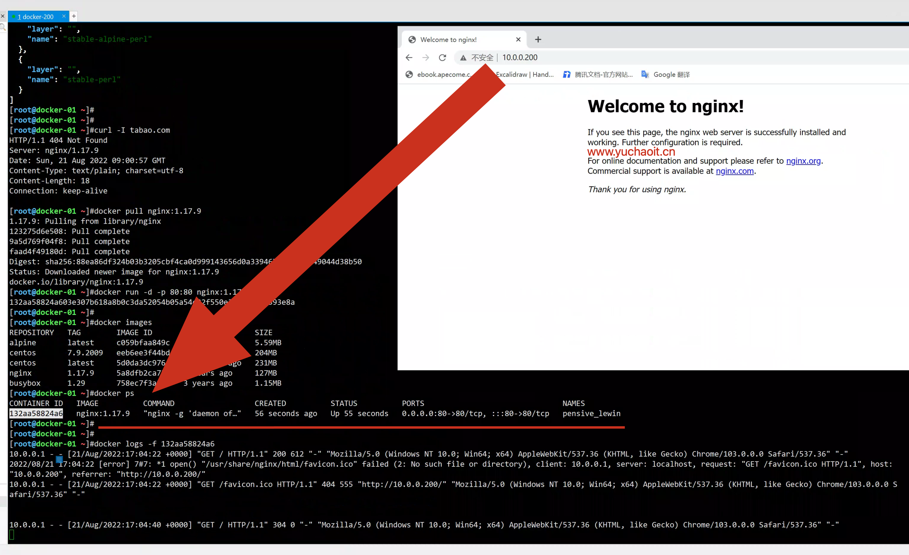
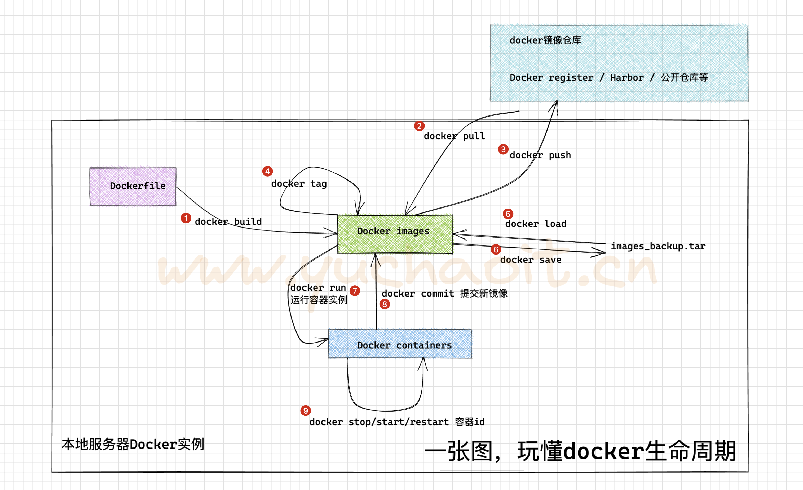
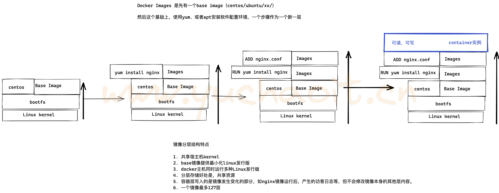
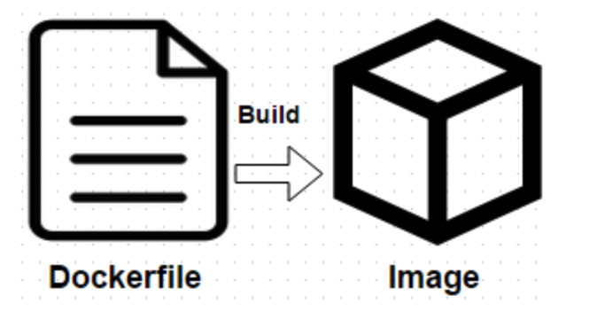
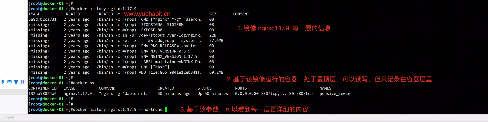
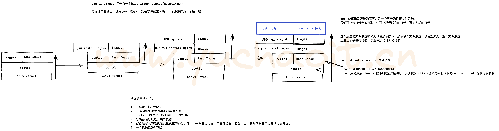
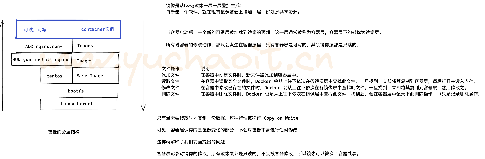
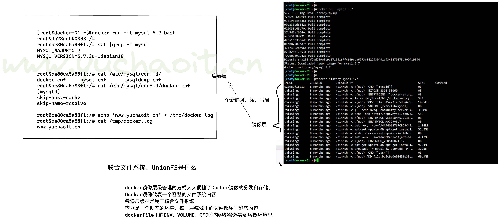

02_docker安装部署
1.国内源安装docker-ce
配置linux内核流量转发功能
因为docker和宿主机的端口映射，本质是内核的流量转发功能
## 若未配置，需要执行如下
$ cat <<EOF > /etc/sysctl.d/docker.conf
net.bridge.bridge-nf-call-ip6tables = 1
net.bridge.bridge-nf-call-iptables = 1
net.ipv4.ip_forward=1
EOF
# 加载内核防火墙模块，允许流量转发
[root@docker-01 ~]#modprobe br_netfilter
[root@docker-01 ~]#
[root@docker-01 ~]#sysctl -p /etc/sysctl.d/docker.conf
net.bridge.bridge-nf-call-ip6tables = 1
net.bridge.bridge-nf-call-iptables = 1
net.ipv4.ip_forward = 1
配置清华、阿里源皆可
清华的
清华的
https://mirrors.tuna.tsinghua.edu.cn/help/docker-ce/
# 先去参考于超老师之前的一个基础环境配置，如yum源等
# 1
yum remove docker docker-common docker-selinux docker-engine -y
yum install yum-utils device-mapper-persistent-data lvm2 -y
# 2
wget -O /etc/yum.repos.d/docker-ce.repo https://download.docker.com/linux/centos/docker-ce.repo
# 3
sed -i 's#download.docker.com#mirrors.tuna.tsinghua.edu.cn/docker-ce#g' /etc/yum.repos.d/docker-ce.repo
# 4
yum makecache fast
yum install docker-ce -y
systemctl start docker
# 配置加速地址
# https://cr.console.aliyun.com/cn-hangzhou/instances/mirrors
# 用于超老师这个镜像加速地址，稳定
mkdir -p /etc/docker
tee /etc/docker/daemon.json <<'EOF'
{
"registry-mirrors" : [
"https://ms9glx6x.mirror.aliyuncs.com"
]
}
EOF
[root@docker-01 ~]#cat /etc/docker/daemon.json
{
"registry-mirrors" : [
"https://ms9glx6x.mirror.aliyuncs.com"
]
}
[root@docker-01 ~]#
# 重载docker
systemctl daemon-reload
systemctl restart docker
# 查看源
[root@docker-01 ~]#docker info |grep -i -A 1 mirrors
Registry Mirrors:
https://ms9glx6x.mirror.aliyuncs.com/
## 查看docker信息
docker info
## docker-client
which docker
## docker daemon
ps aux |grep docker
## containerd
ps aux|grep containerd
systemctl status containerd
阿里的
## 下载阿里源repo文件
curl -o /etc/yum.repos.d/Centos-7.repo http://mirrors.aliyun.com/repo/Centos-7.repo
$ curl -o /etc/yum.repos.d/docker-ce.repo http://mirrors.aliyun.com/docker-ce/linux/centos/docker-ce.repo
$ yum clean all && yum makecache
## yum安装
$ yum install docker-ce-20.10.12 -y
## 查看源中可用版本
$ yum list docker-ce --showduplicates | sort -r
## 安装旧版本
##yum install -y docker-ce-18.09.9
## 配置源加速
# https://cr.console.aliyun.com/cn-hangzhou/instances/mirrors
# 用于超老师这个镜像加速地址，稳定
mkdir -p /etc/docker
vi /etc/docker/daemon.json
{
"registry-mirrors" : [
"https://ms9glx6x.mirror.aliyuncs.com"
]
}
## 设置开机自启
systemctl enable docker
systemctl daemon-reload
## 启动docker
systemctl start docker
## 查看docker信息
docker info
## docker-client
which docker
## docker daemon
ps aux |grep docker
## containerd
ps aux|grep containerd
systemctl status containerd
Docker 服务端版本
[root@docker-01 ~]#docker version
Client: Docker Engine - Community
Version: 20.10.17
API version: 1.41
Go version: go1.17.11
Git commit: 100c701
Built: Mon Jun 6 23:05:12 2022
OS/Arch: linux/amd64
Context: default
Experimental: true
Server: Docker Engine - Community
Engine:
Version: 20.10.17
API version: 1.41 (minimum version 1.12)
Go version: go1.17.11
Git commit: a89b842
Built: Mon Jun 6 23:03:33 2022
OS/Arch: linux/amd64
Experimental: false
containerd:
Version: 1.6.7
GitCommit: 0197261a30bf81f1ee8e6a4dd2dea0ef95d67ccb
runc:
Version: 1.1.3
GitCommit: v1.1.3-0-g6724737
docker-init:
Version: 0.19.0
GitCommit: de40ad0
启动第一个容器
1.这个过程是，下载镜像，运行容器实例
[root@docker-01 ~]#
[root@docker-01 ~]#docker run alpine /bin/echo "Hello docker by www.yuchaoit.cn"
Unable to find image 'alpine:latest' locally
latest: Pulling from library/alpine
59bf1c3509f3: Pull complete
Digest: sha256:21a3deaa0d32a8057914f36584b5288d2e5ecc984380bc0118285c70fa8c9300
Status: Downloaded newer image for alpine:latest
Hello docker by www.yuchaoit.cn
[root@docker-01 ~]#
2.初体验docker玩法
docker官网资源API的文档
https://docs.docker.com/registry/spec/api/
# 获取tags版本
https://hub.docker.com/v2/repositories/library/nginx/tags
镜像命令
搜索镜像
1. 选择官网认证标识的
2. 选择stars星星多的
搜索命令
[root@docker-01 ~]#docker search centos
# 获取镜像版本号
curl -s https://registry.hub.docker.com/v1/repositories/centos/tags|jq
下载镜像
# 如果不加版本，默认下载的就是latest最新版的
[root@docker-01 ~]#docker pull centos
Using default tag: latest
latest: Pulling from library/centos
a1d0c7532777: Pull complete
Digest: sha256:a27fd8080b517143cbbbab9dfb7c8571c40d67d534bbdee55bd6c473f432b177
Status: Downloaded newer image for centos:latest
docker.io/library/centos:latest
# 下载指定版本 centos7.9.2009
[root@docker-01 ~]#docker pull centos:7.9.2009
7.9.2009: Pulling from library/centos
2d473b07cdd5: Pull complete
Digest: sha256:9d4bcbbb213dfd745b58be38b13b996ebb5ac315fe75711bd618426a630e0987
Status: Downloaded newer image for centos:7.9.2009
docker.io/library/centos:7.9.2009
# 下载一个busybox镜像（提供了诸多linux调试工具的容器）
[root@docker-01 ~]#docker pull busybox:1.29
1.29: Pulling from library/busybox
b4a6e23922dd: Pull complete
Digest: sha256:8ccbac733d19c0dd4d70b4f0c1e12245b5fa3ad24758a11035ee505c629c0796
Status: Downloaded newer image for busybox:1.29
docker.io/library/busybox:1.29
查看镜像列表
[root@docker-01 ~]#docker images
REPOSITORY TAG IMAGE ID CREATED SIZE
alpine latest c059bfaa849c 8 months ago 5.59MB
centos 7.9.2009 eeb6ee3f44bd 11 months ago 204MB
centos latest 5d0da3dc9764 11 months ago 231MB
[root@docker-01 ~]#docker image ls
REPOSITORY TAG IMAGE ID CREATED SIZE
alpine latest c059bfaa849c 8 months ago 5.59MB
centos 7.9.2009 eeb6ee3f44bd 11 months ago 204MB
centos latest 5d0da3dc9764 11 months ago 231MB
运行镜像，生成容器
1. 下载nginx镜像
curl -s https://registry.hub.docker.com/v1/repositories/nginx/tags | jq
[root@docker-01 ~]#curl -I tabao.com
HTTP/1.1 404 Not Found
Server: nginx/1.17.9
Date: Sun, 21 Aug 2022 09:00:57 GMT
Content-Type: text/plain; charset=utf-8
Content-Length: 18
Connection: keep-alive
[root@docker-01 ~]#docker pull nginx:1.17.9
1.17.9: Pulling from library/nginx
123275d6e508: Pull complete
9a5d769f04f8: Pull complete
faad4f49180d: Pull complete
Digest: sha256:88ea86df324b03b3205cbf4ca0d999143656d0a3394675630e55e49044d38b50
Status: Downloaded newer image for nginx:1.17.9
docker.io/library/nginx:1.17.9
2.运行镜像，生成容器
# 备注，若镜像不存在，docker也会自动pull下载镜像
[root@docker-01 ~]#docker run -d -p 80:80 nginx:1.17.9
132aa58824a603e307b618a8b0c3da52054b05a54c22f550e355eac143393e8a
# 参数解释
docker run 参数 镜像
-d 后台运行
-p 端口映射
nginx:1.17.9 镜像名
默认我们机器上是没有docker镜像的，docker run是在运行时，寻找且自动下载镜像
3.查看镜像列表
[root@docker-01 ~]#docker images
REPOSITORY TAG IMAGE ID CREATED SIZE
alpine latest c059bfaa849c 8 months ago 5.59MB
centos 7.9.2009 eeb6ee3f44bd 11 months ago 204MB
centos latest 5d0da3dc9764 11 months ago 231MB
nginx 1.17.9 5a8dfb2ca731 2 years ago 127MB
busybox 1.29 758ec7f3a1ee 3 years ago 1.15MB
4.查看运行中的容器列表
[root@docker-01 ~]#docker ps
CONTAINER ID IMAGE COMMAND CREATED STATUS PORTS NAMES
132aa58824a6 nginx:1.17.9 "nginx -g 'daemon of…" 56 seconds ago Up 55 seconds 0.0.0.0:80->80/tcp, :::80->80/tcp pensive_lewin
5.访问容器中的nginx 1.17.9

看到这个页面，就说明你正确安装了docker，且运行了第一个nginx容器服务。
3.一张图玩懂docker操作

4.docker镜像详解
一个完成的Docker镜像可以支撑容器的运行，镜像提供文件系统
# 下载ubuntu系统镜像
[root@docker-01 ~]#docker pull ubuntu
Using default tag: latest
latest: Pulling from library/ubuntu
7b1a6ab2e44d: Pull complete
Digest: sha256:626ffe58f6e7566e00254b638eb7e0f3b11d4da9675088f4781a50ae288f3322
Status: Downloaded newer image for ubuntu:latest
docker.io/library/ubuntu:latest
[root@docker-01 ~]#
内核与发行版
传统的虚拟机安装操作系统所提供的系统镜像，包含两部分：
Linux内核部分
[root@docker-01 ~]#
[root@docker-01 ~]#uname -r
3.10.0-862.el7.x86_64
系统发行版部分
[root@docker-01 ~]#cat /etc/os-release
NAME="CentOS Linux"
VERSION="7 (Core)"
ID="centos"
ID_LIKE="rhel fedora"
VERSION_ID="7"
PRETTY_NAME="CentOS Linux 7 (Core)"
ANSI_COLOR="0;31"
CPE_NAME="cpe:/o:centos:centos:7"
HOME_URL="https://www.centos.org/"
BUG_REPORT_URL="https://bugs.centos.org/"
CENTOS_MANTISBT_PROJECT="CentOS-7"
CENTOS_MANTISBT_PROJECT_VERSION="7"
REDHAT_SUPPORT_PRODUCT="centos"
REDHAT_SUPPORT_PRODUCT_VERSION="7"
而docker镜像是不包含内核的，只是下载了某个发行版部分。
# 获取centos7.5发行版本
[root@docker01 ~]# docker search centos:7.5
# 获取mysql5.6
[root@docker01 ~]# docker search mysql:5.6
# 查看刚才运行的nginx容器，它是什么发行版
[root@docker-01 ~]#docker exec -it 132 bash
root@132aa58824a6:/# cat /etc/os-release
PRETTY_NAME="Debian GNU/Linux 10 (buster)"
NAME="Debian GNU/Linux"
VERSION_ID="10"
VERSION="10 (buster)"
VERSION_CODENAME=buster
ID=debian
HOME_URL="https://www.debian.org/"
SUPPORT_URL="https://www.debian.org/support"
BUG_REPORT_URL="https://bugs.debian.org/"
root@132aa58824a6:/#
# 容器内核，和宿主机内核一样
root@132aa58824a6:/# cat /proc/version
Linux version 3.10.0-862.el7.x86_64 (builder@kbuilder.dev.centos.org) (gcc version 4.8.5 20150623 (Red Hat 4.8.5-28) (GCC) ) #1 SMP Fri Apr 20 16:44:24 UTC 2018
root@132aa58824a6:/#
root@132aa58824a6:/# exit
exit
[root@docker-01 ~]#
[root@docker-01 ~]#cat /proc/version
Linux version 3.10.0-862.el7.x86_64 (builder@kbuilder.dev.centos.org) (gcc version 4.8.5 20150623 (Red Hat 4.8.5-28) (GCC) ) #1 SMP Fri Apr 20 16:44:24 UTC 2018
[root@docker-01 ~]#
/proc文件系统，它不是普通的文件系统，而是系统内核的映像，也就是说，该目录中的文件是存放在系统内存之中的，它以文件系统的方式为访问系统内核数据的操作提供接口。而我们使用命令“uname -a"的信息就是从该文件获取的，当然用方法二的命令直接查看它的内容也可以达到同等效果.另外，加上参数"a"是获得详细信息，如果不加参数为查看系统名称。
docker镜像定义
我们如果自定义镜像，刚才超哥已经和大家说了，docker镜像不包含linux内核，和宿主机共用。
我们如果想要定义一个mysql5.6镜像，我们会这么做
- 获取基础镜像，选择一个发行版平台（ubutu，centos）
- 在centos镜像中安装mysql5.6软件
导出镜像，可以命名为mysql:5.6镜像文件。
从这个过程，我们可以感觉出这是一层一层的添加的，docker镜像的层级概念就出来了，底层是centos镜像，上层是mysql镜像，centos镜像层属于父镜像。

为什么要有docker镜像
其实就是将业务代码运行的环境，整体打包为单个的文件，就是docker镜像。
如何创建docker镜像
现在docker官方共有仓库里面有大量的镜像，所以最基础的镜像，我们可以在公有仓库直接拉取，因为这些镜像都是原厂维护，可以得到即使的更新和修护。
dockerfile
我们如果想去定制这些镜像，我们可以去编写Dockerfile，然后重新bulid，最后把它打包成一个镜像
这种方式是最为推荐的方式包括我们以后去企业当中去实践应用的时候也是推荐这种方式。

docker commit
当然还有另外一种方式，就是通过镜像启动一个容器，然后进行操作，最终通过commit这个命令commit一个镜像。
docker镜像分层结构
可以基于 docker history 查看镜像每一层信息
[root@docker-01 ~]#docker history nginx:1.17.9
IMAGE CREATED CREATED BY SIZE COMMENT
5a8dfb2ca731 2 years ago /bin/sh -c #(nop) CMD ["nginx" "-g" "daemon… 0B
<missing> 2 years ago /bin/sh -c #(nop) STOPSIGNAL SIGTERM 0B
<missing> 2 years ago /bin/sh -c #(nop) EXPOSE 80 0B
<missing> 2 years ago /bin/sh -c ln -sf /dev/stdout /var/log/nginx… 22B
<missing> 2 years ago /bin/sh -c set -x && addgroup --system -… 57.6MB
<missing> 2 years ago /bin/sh -c #(nop) ENV PKG_RELEASE=1~buster 0B
<missing> 2 years ago /bin/sh -c #(nop) ENV NJS_VERSION=0.3.9 0B
<missing> 2 years ago /bin/sh -c #(nop) ENV NGINX_VERSION=1.17.9 0B
<missing> 2 years ago /bin/sh -c #(nop) LABEL maintainer=NGINX Do… 0B
<missing> 2 years ago /bin/sh -c #(nop) CMD ["bash"] 0B
<missing> 2 years ago /bin/sh -c #(nop) ADD file:865f9041e12eb341f… 69.2MB
命令查看镜像的分层关系


base镜像
base镜像是指如各种Linux发行版，如centos，ubuntu，Debian，alpine等。
[root@docker-01 ~]#docker run -it alpine /bin/sh
/ # cat /etc/os-release
NAME="Alpine Linux"
ID=alpine
VERSION_ID=3.15.0
PRETTY_NAME="Alpine Linux v3.15"
HOME_URL="https://alpinelinux.org/"
BUG_REPORT_URL="https://bugs.alpinelinux.org/"
提示
1. alpine镜像是用于docker镜像体积优化里的一个重要基础镜像，只有几兆，而其他主流base image至少都在百兆。
2. alpine采用busybox套件，而centos等基础镜像安装的依赖较多。
对于base镜像来说，只需要提供基本的/dev/ /proc /bin 等系统运行必须得文件，因此很小，提供基本命令，底层直接用宿主机的内核kernel。
docker为什么分层镜像
镜像分享一大好处就是共享资源，例如有多个镜像都来自于同一个base镜像，那么在docker 主机只需要存储一份base镜像。
内存里也只需要加载一份base镜像，即可为多个容器服务。
即使多个容器共享一个base镜像，某个容器修改了base镜像的内容，例如修改/etc/下配置文件，其他容器的/etc/下内容是不会被修改的，修改动作只限制在单个容器内，这就是容器的写入时复制特性（Copy-on-write）。

联合文件系统UnionFS
[root@docker-01 ~]#
[root@docker-01 ~]#docker pull mysql:5.7
5.7: Pulling from library/mysql
72a69066d2fe: Pull complete
93619dbc5b36: Pull complete
99da31dd6142: Pull complete
626033c43d70: Pull complete
37d5d7efb64e: Pull complete
ac563158d721: Pull complete
d2ba16033dad: Pull complete
0ceb82207cd7: Pull complete
37f2405cae96: Pull complete
e2482e017e53: Pull complete
70deed891d42: Pull complete
Digest: sha256:f2ad209efe9c67104167fc609cca6973c8422939491c9345270175a300419f94
Status: Downloaded newer image for mysql:5.7
docker.io/library/mysql:5.7

5.docker镜像实践操作
镜像详细命令
1.获取镜像，docker hub里有大量高质量的镜像
[root@docker01 ~]# docker pull centos # 默认标签tag是centos:latest
[root@docker01 ~]# docker pull centos:7.2.1511 # 指定版本下载
2.查看所有镜像
[root@docker01 ~]# docker images
REPOSITORY TAG IMAGE ID CREATED SIZE
nginx latest 4bb46517cac3 3 weeks ago 133MB
centos latest 0d120b6ccaa8 3 weeks ago 215MB
centos 7.2.1511 9aec5c5fe4ba 17 months ago 195MB
3.docker本地镜像存储在宿主机的目录查看
# 基于docker info 查看 docker数据目录
[root@docker-01 ~]#docker images
REPOSITORY TAG IMAGE ID CREATED SIZE
mysql 5.7 c20987f18b13 8 months ago 448MB
alpine latest c059bfaa849c 8 months ago 5.59MB
ubuntu latest ba6acccedd29 10 months ago 72.8MB
centos 7.9.2009 eeb6ee3f44bd 11 months ago 204MB
centos latest 5d0da3dc9764 11 months ago 231MB
nginx 1.17.9 5a8dfb2ca731 2 years ago 127MB
busybox 1.29 758ec7f3a1ee 3 years ago 1.15MB
[root@docker-01 ~]#
[root@docker-01 ~]#docker info |grep -i 'root dir'
Docker Root Dir: /var/lib/docker
# 查看数据目录下有啥
[root@docker-01 ~]#ll /var/lib/docker/
total 12
drwx--x--x 4 root root 120 Aug 21 20:46 buildkit
drwx--x--- 10 root root 4096 Aug 22 02:23 containers
drwx------ 3 root root 22 Aug 21 20:46 image
drwxr-x--- 3 root root 19 Aug 21 20:46 network
drwx--x--- 38 root root 4096 Aug 22 02:23 overlay2
drwx------ 4 root root 32 Aug 21 20:46 plugins
drwx------ 2 root root 6 Aug 21 20:52 runtimes
drwx------ 2 root root 6 Aug 21 20:46 swarm
drwx------ 2 root root 6 Aug 22 02:17 tmp
drwx------ 2 root root 6 Aug 21 20:46 trust
drwx-----x 6 root root 4096 Aug 22 02:23 volumes
# 镜像数据存储在
[root@docker-01 ~]#docker info |grep -i 'storage'
Storage Driver: overlay2
# 查看大小
[root@docker-01 ~]#du -sh /var/lib/docker/overlay2/
1.3G /var/lib/docker/overlay2/
# imagesdb该目录存放镜像，容器的相关信息，是一个json文件
[root@docker-01 ~]#ls /var/lib/docker/image/overlay2/imagedb/content/sha256/
5a8dfb2ca7312ee39433331b11d92f45bb19d7809f7c0ff19e1d01a2c131e959 ba6acccedd2923aee4c2acc6a23780b14ed4b8a5fa4e14e252a23b846df9b6c1 eeb6ee3f44bd0b5103bb561b4c16bcb82328cfe5809ab675bb17ab3a16c517c9
5d0da3dc976460b72c77d94c8a1ad043720b0416bfc16c52c45d4847e53fadb6 c059bfaa849c4d8e4aecaeb3a10c2d9b3d85f5165c66ad3a4d937758128c4d18
758ec7f3a1ee85f8f08399b55641bfb13e8c1109287ddc5e22b68c3d653152ee c20987f18b130f9d144c9828df630417e2a9523148930dc3963e9d0dab302a76
# 以基础镜像运行一个容器，添加参数
-i Keep STDIN open even if not attached
-t Allocate a pseudo-TTY
--rm Automatically remove the container when it exits
--name Assign a name to the container
bash 指定解释器
[root@docker-01 ~]#docker run -it --name www.yuchaoit.cn_centos7 centos:7.9.2009 bash
[root@8a6490e3d5a2 /]#
[root@8a6490e3d5a2 /]# cat /etc/redhat-release
CentOS Linux release 7.9.2009 (Core)
[root@8a6490e3d5a2 /]# ps -ef
UID PID PPID C STIME TTY TIME CMD
root 1 0 0 18:41 pts/0 00:00:00 bash
root 17 1 0 18:42 pts/0 00:00:00 ps -ef
# 运行centos8容器
[root@docker-01 ~]#docker run -it --name www.yuchaoit.cn_centos8 centos bash
[root@252c828de18d /]# cat /etc/redhat-release
CentOS Linux release 8.4.2105
镜像增删改查管理
[root@docker-01 ~]#docker images
REPOSITORY TAG IMAGE ID CREATED SIZE
mysql 5.7 c20987f18b13 8 months ago 448MB
alpine latest c059bfaa849c 8 months ago 5.59MB
ubuntu latest ba6acccedd29 10 months ago 72.8MB
centos 7.9.2009 eeb6ee3f44bd 11 months ago 204MB
centos latest 5d0da3dc9764 11 months ago 231MB
nginx 1.17.9 5a8dfb2ca731 2 years ago 127MB
busybox 1.29 758ec7f3a1ee 3 years ago 1.15MB
[root@docker-01 ~]#
列表展示了仓库名，标签，镜像ID，创建时间，占用空间
2.docker镜像体积
docker镜像是多层存储结构，可以继承，复用。因此不同的镜像也会使用相同的base images，从而使用些共同的层layer。
因此docker使用联合文件系统，相同的层只需要保存一份，实际镜像占用硬盘空间要比列表镜像小的多。
none镜像
none镜像（dangline image 虚悬镜像）
出现none镜像的原因：
- 在docker hub上镜像如果更新后，名称变化，用户再docker pull就会出现该情况
- docker build时候，镜像名重复，也会导致新旧镜像同名，旧镜像名称被取消，出现none
一般用docker tag解决即可
列出镜像
1.根据名字列出镜像
[root@docker-01 ~]#docker images cent*
REPOSITORY TAG IMAGE ID CREATED SIZE
centos 7.9.2009 eeb6ee3f44bd 11 months ago 204MB
centos latest 5d0da3dc9764 11 months ago 231MB
centos 7.7.1908 08d05d1d5859 2 years ago 204MB
centos 7.6.1810 f1cb7c7d58b7 3 years ago 202MB
2.查看指定镜像
[root@docker-01 ~]#docker images nginx
nginx nginx:1.17.9
[root@docker-01 ~]#docker images nginx:1.17.9
REPOSITORY TAG IMAGE ID CREATED SIZE
nginx 1.17.9 5a8dfb2ca731 2 years ago 127MB
[root@docker-01 ~]#
3.只查看镜像id，id就代表该镜像了
[root@docker-01 ~]#docker images -q
c20987f18b13
c059bfaa849c
ba6acccedd29
eeb6ee3f44bd
5d0da3dc9764
5a8dfb2ca731
08d05d1d5859
f1cb7c7d58b7
758ec7f3a1ee
[root@docker-01 ~]#
4.格式化输出docker信息
[root@docker-01 ~]#docker images --format "{{.ID}}:{{.Repository}}"
c20987f18b13:mysql
c059bfaa849c:alpine
ba6acccedd29:ubuntu
eeb6ee3f44bd:centos
5d0da3dc9764:centos
5a8dfb2ca731:nginx
08d05d1d5859:centos
f1cb7c7d58b7:centos
758ec7f3a1ee:busybox
5.更丰富的格式化
[root@docker-01 ~]#docker images --format "table {{.ID}} {{.Repository}} {{.Tag}}"
IMAGE ID REPOSITORY TAG
c20987f18b13 mysql 5.7
c059bfaa849c alpine latest
ba6acccedd29 ubuntu latest
eeb6ee3f44bd centos 7.9.2009
5d0da3dc9764 centos latest
5a8dfb2ca731 nginx 1.17.9
08d05d1d5859 centos 7.7.1908
f1cb7c7d58b7 centos 7.6.1810
758ec7f3a1ee busybox 1.29
也可以是
docker images --format "table {{.ID}} {{.Repository}} {{.Tag}}" | column -t
6.格式化是docker信息提取的高级语法，需要学习下go的template语法
# 基于--format="{{json .}}" 拿到详细字段，即可格式化
[root@docker-01 ~]#docker images --format="{{json .}}"
[root@docker-01 ~]#docker images --format="{{.CreatedAt}} {{.ID}} {{.Repository}} {{.Size}} {{.Tag}}" |column -t
2021-12-21 10:56:51 +0800 CST c20987f18b13 mysql 448MB 5.7
2021-11-25 04:19:40 +0800 CST c059bfaa849c alpine 5.59MB latest
2021-10-16 08:37:47 +0800 CST ba6acccedd29 ubuntu 72.8MB latest
2021-09-16 02:20:23 +0800 CST eeb6ee3f44bd centos 204MB 7.9.2009
2021-09-16 02:20:05 +0800 CST 5d0da3dc9764 centos 231MB latest
2020-04-16 18:09:38 +0800 CST 5a8dfb2ca731 nginx 127MB 1.17.9
2019-11-12 08:21:02 +0800 CST 08d05d1d5859 centos 204MB 7.7.1908
2019-03-15 05:20:29 +0800 CST f1cb7c7d58b7 centos 202MB 7.6.1810
2018-12-26 16:20:42 +0800 CST 758ec7f3a1ee busybox 1.15MB 1.29
删除本地镜像
# 删除镜像，可以用 ID，名字，摘要等
[root@docker-01 ~]#docker rmi centos:7.7.1908
Untagged: centos:7.7.1908
Untagged: centos@sha256:50752af5182c6cd5518e3e91d48f7ff0cba93d5d760a67ac140e2d63c4dd9efc
Deleted: sha256:08d05d1d5859ebcfb3312d246e2082e46cb307f0e896c9ac097185f0b0b19e56
Deleted: sha256:034f282942cd6c3abf9384601a57f080f8f75cc7f58527db8e07573d9d14ab46
# 删除镜像，要先干掉使用该镜像的容器（无论是否存活）
# 不加tag版本的话，默认latest
[root@docker-01 ~]#docker rmi centos
Error response from daemon: conflict: unable to remove repository reference "centos" (must force) - container 252c828de18d is using its referenced image 5d0da3dc9764
[root@docker-01 ~]#
# 清理挂掉的容器实例记录
docker rm `docker ps -aq`
# 根据id删除（最短3位）
[root@docker-01 ~]#docker rmi f1c
Untagged: centos:7.6.1810
Untagged: centos@sha256:62d9e1c2daa91166139b51577fe4f4f6b4cc41a3a2c7fc36bd895e2a17a3e4e6
Deleted: sha256:f1cb7c7d58b73eac859c395882eec49d50651244e342cd6c68a5c7809785f427
Deleted: sha256:89169d87dbe2b72ba42bfbb3579c957322baca28e03a1e558076542a1c1b2b4a
# 清理所有镜像（危险命令）
# 删除命令，包括了删除，以及取消tag两个步骤
docker rmi `docker images -aq`
# 于超老师这里未彻底删除，因为有一个nginx容器在运行
# 得 停止删除容器 > 删除镜像
[root@docker-01 ~]#
[root@docker-01 ~]#docker images
REPOSITORY TAG IMAGE ID CREATED SIZE
nginx 1.17.9 5a8dfb2ca731 2 years ago 127MB
[root@docker-01 ~]#
[root@docker-01 ~]#docker ps -a
CONTAINER ID IMAGE COMMAND CREATED STATUS PORTS NAMES
132aa58824a6 nginx:1.17.9 "nginx -g 'daemon of…" 2 hours ago Up 2 hours 0.0.0.0:80->80/tcp, :::80->80/tcp pensive_lewin
[root@docker-01 ~]#
# 提示，不要随便用 docker rmi -f 强制参数
导出、导入镜像
常用于公司的离线环境使用镜像
默认导出的是tar归档文件
导出镜像
[root@docker-01 ~]#docker save nginx:1.17.9 > /images_save_all/www.yuchaoit.cn_nginx:1.17.9.tar
[root@docker-01 ~]#du -h /images_save_all/www.yuchaoit.cn_nginx\:1.17.9.tar
125M /images_save_all/www.yuchaoit.cn_nginx:1.17.9.tar
导入镜像
# 环境清理
[root@docker-01 ~]#docker stop `docker ps -aq`
132aa58824a6
[root@docker-01 ~]#
[root@docker-01 ~]#docker rm `docker ps -aq`
132aa58824a6
[root@docker-01 ~]#
[root@docker-01 ~]#docker rmi nginx:1.17.9
Untagged: nginx:1.17.9
Untagged: nginx@sha256:88ea86df324b03b3205cbf4ca0d999143656d0a3394675630e55e49044d38b50
Deleted: sha256:5a8dfb2ca7312ee39433331b11d92f45bb19d7809f7c0ff19e1d01a2c131e959
Deleted: sha256:eede83f79a434879440e1f6f6f98a135b38057a35ddcdace715ae1bddcd7a884
Deleted: sha256:fa994cfd7aeedcd46b70cf30fea0ccf9f59f990bbb86bfa9b7c02d7ff2a833eb
Deleted: sha256:b60e5c3bcef2f42ec42648b3acf7baf6de1fa780ca16d9180f3b4a3f266fe7bc
[root@docker-01 ~]#
[root@docker-01 ~]#docker images
REPOSITORY TAG IMAGE ID CREATED SIZE
[root@docker-01 ~]#
# 导入本地镜像
[root@docker-01 ~]#
[root@docker-01 ~]#docker load < /images_save_all/www.yuchaoit.cn_nginx\:1.17.9.tar
b60e5c3bcef2: Loading layer [==================================================>] 72.49MB/72.49MB
0e07021aa61a: Loading layer [==================================================>] 58.11MB/58.11MB
351816b95c49: Loading layer [==================================================>] 3.584kB/3.584kB
Loaded image: nginx:1.17.9
[root@docker-01 ~]#
[root@docker-01 ~]#du -sh /var/lib/docker/overlay2/
131M /var/lib/docker/overlay2/
[root@docker-01 ~]#
[root@docker-01 ~]#
[root@docker-01 ~]#docker images
REPOSITORY TAG IMAGE ID CREATED SIZE
nginx 1.17.9 5a8dfb2ca731 2 years ago 127MB
[root@docker-01 ~]#file /images_save_all/www.yuchaoit.cn_nginx\:1.17.9.tar
/images_save_all/www.yuchaoit.cn_nginx:1.17.9.tar: POSIX tar archive
查看镜像详细信息
[root@docker-01 /images_save_all]#docker inspect nginx:1.17.9 | jq
# 查看无论是镜像，还是容器的详细信息，都是维护容器的重要手段
6.docker容器管理实践
启动容器
docker run等于创建+启动
注意：容器内的进程必须处于前台运行状态，否则容器就会直接退出
我们运行如centos基础镜像，没有运行任何程序，因此容器直接挂掉
[root@docker-01 /images_save_all]#docker run centos:7
Unable to find image 'centos:7' locally
7: Pulling from library/centos
2d473b07cdd5: Pull complete
Digest: sha256:9d4bcbbb213dfd745b58be38b13b996ebb5ac315fe75711bd618426a630e0987
Status: Downloaded newer image for centos:7
# 交互式的运行，可以进入容器空间
[root@docker-01 /images_save_all]#docker run -it centos:7 bash
[root@94963614be20 /]# cat /etc/redhat-release
CentOS Linux release 7.9.2009 (Core)
[root@94963614be20 /]#
# 非交互式运行，容器会直接挂掉
[root@docker-01 /images_save_all]#docker run centos:7
[root@docker-01 /images_save_all]#
[root@docker-01 /images_save_all]#docker run centos:7
# 查看容器历史记录
[root@docker-01 /images_save_all]#docker ps -a
CONTAINER ID IMAGE COMMAND CREATED STATUS PORTS NAMES
baca62de6cbe centos:7 "/bin/bash" 2 seconds ago Exited (0) 1 second ago kind_jepsen
fe2e571a5d6e centos:7 "/bin/bash" 4 seconds ago Exited (0) 4 seconds ago objective_allen
94963614be20 centos:7 "bash" About a minute ago Exited (0) 10 seconds ago determined_meitner
900c51bd3677 centos:7 "/bin/bash" About a minute ago Exited (0) About a minute ago youthful_blackburn
[root@docker-01 /images_save_all]#
运行可以活着的容器
-d 对于宿主机，后台运行容器
-p 端口映射
[root@docker-01 /images_save_all]#docker run -d -p 80:80 nginx:1.17.9
4bc32e061a6ebd5b347f80b33957d6ccd73f80d07030d17ef163570fe610a2db
# 直接访问宿主机即可
[root@docker-01 /images_save_all]#curl 10.0.0.200 -I
HTTP/1.1 200 OK
Server: nginx/1.17.9
Date: Sun, 21 Aug 2022 23:15:27 GMT
Content-Type: text/html
Content-Length: 612
Last-Modified: Tue, 03 Mar 2020 14:32:47 GMT
Connection: keep-alive
ETag: "5e5e6a8f-264"
Accept-Ranges: bytes
# 宿主机上访问容器ip也可以
[root@docker-01 /images_save_all]#docker ps
CONTAINER ID IMAGE COMMAND CREATED STATUS PORTS NAMES
4bc32e061a6e nginx:1.17.9 "nginx -g 'daemon of…" About a minute ago Up About a minute 0.0.0.0:80->80/tcp, :::80->80/tcp awesome_wilbur
[root@docker-01 /images_save_all]#
# 提取容器ip
[root@docker-01 /images_save_all]#docker inspect 4bc --format "{{.NetworkSettings.IPAddress}}"
172.17.0.2
# 访问容器
[root@docker-01 /images_save_all]#curl 172.17.0.2 -I
HTTP/1.1 200 OK
Server: nginx/1.17.9
Date: Sun, 21 Aug 2022 23:20:18 GMT
Content-Type: text/html
Content-Length: 612
Last-Modified: Tue, 03 Mar 2020 14:32:47 GMT
Connection: keep-alive
ETag: "5e5e6a8f-264"
Accept-Ranges: bytes
运行容器且指定名字
# 开发要求提供一个redis容器，进行测试使用
[root@docker-01 /images_save_all]#docker run --name www.yuchaoit.cn_redis5 -d -p 16379:6379 redis:5
Unable to find image 'redis:5' locally
5: Pulling from library/redis
a2abf6c4d29d: Pull complete
c7a4e4382001: Pull complete
4044b9ba67c9: Pull complete
106f2419edf3: Pull complete
9772114922b9: Pull complete
63031aedd0c4: Pull complete
Digest: sha256:a30e893aa92ea4b57baf51e5602f1657ec5553b65e62ba4581a71e161e82868a
Status: Downloaded newer image for redis:5
87a1f13bf622511591d049628608c5506ea824cdb92ce64cc3a012a3399036eb
检查容器记录
[root@docker-01 /images_save_all]#docker ps
CONTAINER ID IMAGE COMMAND CREATED STATUS PORTS NAMES
87a1f13bf622 redis:5 "docker-entrypoint.s…" 7 seconds ago Up 7 seconds 0.0.0.0:16379->6379/tcp, :::16379->6379/tcp www.yuchaoit.cn_redis5
4bc32e061a6e nginx:1.17.9 "nginx -g 'daemon of…" 8 minutes ago Up 8 minutes 0.0.0.0:80->80/tcp, :::80->80/tcp awesome_wilbur
停止容器（并非删除）
[root@docker-01 /images_save_all]#docker stop www.yuchaoit.cn_redis5
www.yuchaoit.cn_redis5
[root@docker-01 /images_save_all]#
[root@docker-01 /images_save_all]#docker ps
CONTAINER ID IMAGE COMMAND CREATED STATUS PORTS NAMES
4bc32e061a6e nginx:1.17.9 "nginx -g 'daemon of…" 9 minutes ago Up 9 minutes 0.0.0.0:80->80/tcp, :::80->80/tcp awesome_wilbur
[root@docker-01 /images_save_all]#
启动容器
[root@docker-01 /images_save_all]#docker start www.yuchaoit.cn_redis5
www.yuchaoit.cn_redis5
[root@docker-01 /images_save_all]#docker ps
CONTAINER ID IMAGE COMMAND CREATED STATUS PORTS NAMES
87a1f13bf622 redis:5 "docker-entrypoint.s…" About a minute ago Up 1 second 0.0.0.0:16379->6379/tcp, :::16379->6379/tcp www.yuchaoit.cn_redis5
4bc32e061a6e nginx:1.17.9 "nginx -g 'daemon of…" 10 minutes ago Up 10 minutes 0.0.0.0:80->80/tcp, :::80->80/tcp awesome_wilbur
[root@docker-01 /images_save_all]#
监控容器资源状态
[root@docker-01 /images_save_all]#docker stats www.yuchaoit.cn_redis5
进入容器空间
exec命令
要结合-t -i参数，开启终端，交互式访问容器空间
[root@docker-01 /images_save_all]#docker exec -it www.yuchaoit.cn_redis5 bash
root@87a1f13bf622:/data#
root@87a1f13bf622:/data#
root@87a1f13bf622:/data# cat /etc/os-release
PRETTY_NAME="Debian GNU/Linux 11 (bullseye)"
NAME="Debian GNU/Linux"
VERSION_ID="11"
VERSION="11 (bullseye)"
VERSION_CODENAME=bullseye
ID=debian
HOME_URL="https://www.debian.org/"
SUPPORT_URL="https://www.debian.org/support"
BUG_REPORT_URL="https://bugs.debian.org/"
root@87a1f13bf622:/data#
访问容器应用(redis)
由于我们做了端口映射，可以基于宿主机的端口访问
[root@docker-01 /images_save_all]#redis-cli -h 10.0.0.200 -p 16379
10.0.0.200:16379> ping
PONG
10.0.0.200:16379> set name chaoge666
OK
10.0.0.200:16379> exit
[root@docker-01 /images_save_all]#redis-cli -h 172.17.0.3 -p 6379
172.17.0.3:6379>
172.17.0.3:6379> dbsize
(integer) 1
172.17.0.3:6379> get name
"chaoge666"
172.17.0.3:6379>
查看容器内日志
[root@docker-01 /images_save_all]#docker logs www.yuchaoit.cn_redis5
删除容器
[root@docker-01 /images_save_all]#docker stop www.yuchaoit.cn_redis5
www.yuchaoit.cn_redis5
[root@docker-01 /images_save_all]#docker rm www.yuchaoit.cn_redis5
www.yuchaoit.cn_redis5
[root@docker-01 /images_save_all]#docker ps -a
CONTAINER ID IMAGE COMMAND CREATED STATUS PORTS NAMES
4bc32e061a6e nginx:1.17.9 "nginx -g 'daemon of…" 24 minutes ago Up 24 minutes 0.0.0.0:80->80/tcp, :::80->80/tcp awesome_wilbur
baca62de6cbe centos:7 "/bin/bash" 25 minutes ago Exited (0) 25 minutes ago kind_jepsen
fe2e571a5d6e centos:7 "/bin/bash" 25 minutes ago Exited (0) 25 minutes ago objective_allen
94963614be20 centos:7 "bash" 26 minutes ago Exited (0) 25 minutes ago determined_meitner
900c51bd3677 centos:7 "/bin/bash" 27 minutes ago Exited (0) 27 minutes ago youthful_blackburn
[root@docker-01 /images_save_all]#
查看容器记录（挂掉，运行中）
[root@docker-01 /images_save_all]#docker ps
[root@docker-01 /images_save_all]#docker ps -a
批量干掉容器进程
-q 只显示id
-a 显示所有记录
[root@docker-01 /images_save_all]#docker stop `docker ps -q`
4bc32e061a6e
[root@docker-01 /images_save_all]#
[root@docker-01 /images_save_all]#
[root@docker-01 /images_save_all]#docker rm `docker ps -aq`
4bc32e061a6e
baca62de6cbe
fe2e571a5d6e
94963614be20
900c51bd3677
练习
1. 下载mysql5.7.38镜像，确保可以远程访问，创建库表
2. 下载redis最新镜像，确保可以远程访问，读写key
3. 下载nginx 1.21.5 ，确保可以远程访问，修改首页内容为，"云原生！我来了！"
4. 下载wordpress最新镜像，运行，确保可以访问，发表文章。